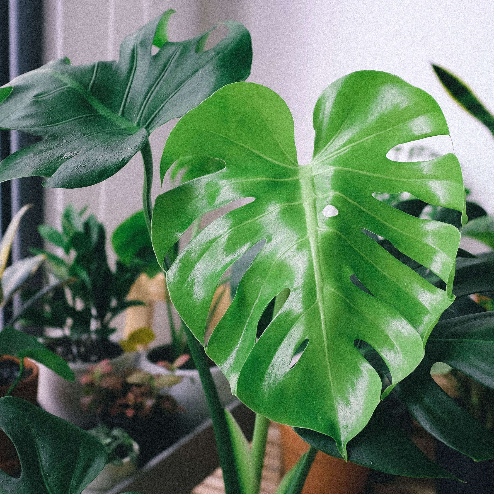

Monstera

Monstera is a tropical plant with large green leaves. It likes bright indirect light and regular watering.
Plant information
Scientific name: Monstera deliciosa
Difficulty: Easy
Light: Bright indirect light
Watering: Every 1–2 weeks
Humidity: 50–70%
Temperature: 18–27°C
Toxicity: Toxic to pets
Care instructions
Light
Place the Monstera in bright indirect light. Avoid strong direct sunlight.
Water
Water when the top layer of soil becomes dry. Do not leave the plant standing in water.
Humidity
Monstera prefers higher humidity.
Temperature
Keep the plant in a warm room.
Care tips
- Water when the soil is dry.
- Give the plant bright indirect light.
- Clean the leaves regularly.
- Rotate the plant from time to time.
Community Q&A
Have a question about Monstera?
← Back to the garden